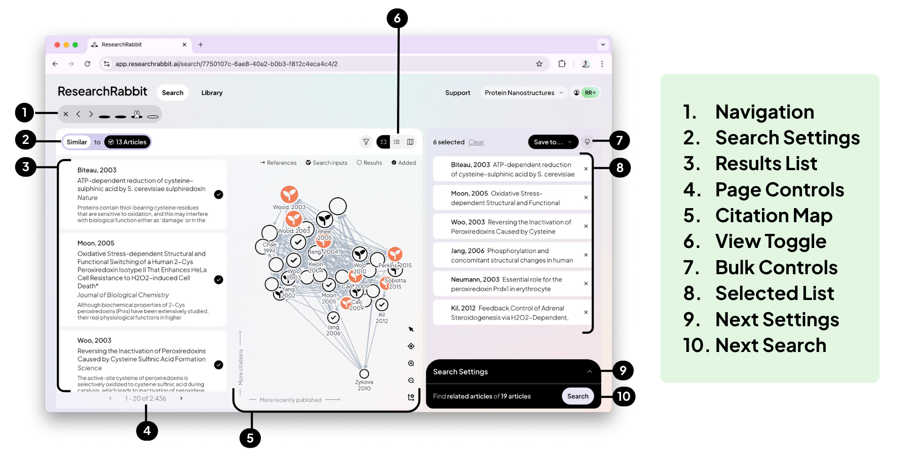

-
Choose two starting papers
- Input
- Card (1990) and Peri and Yasenov (2019): the same historical episode, with an explicit methodological re-examination.
- Action
- Open ResearchRabbit and create a free account if needed. Keep the titles or DOIs ready.
- Output
- A small, relevant seed set, not your whole library.
The free tier supports this exercise. Seed choice shapes the recommendations; two papers from one debate will not reveal every relevant field.
-
Start a search from those papers
- Input
- The two references.
- Action
- Download the two example references. For your own papers, put them in a small Zotero collection, then right-click it → Export Collection → BibTeX.
- Use ResearchRabbit's reference-file import option to load the
.bibfile. Review the recognised records and select both intended papers, rather than pasting several titles into one query. - Open Grow and check the Seeds count above the map. For this exercise it should show 2. If it shows 1, only one paper is an active seed.
- Output
- Recommendations based on your verified two-paper seed set.
Library membership is not seed selection. Importing a Zotero collection does not mean every item is active in the current search. Add manages seeds; Grow shows recommendations. Current interface walkthrough.
Can a working paper be a seed?
Try its exact title or DOI, or include its reference in your BibTeX import. Confirm the authors and version of the recognised record. A journal publication is not required, but database coverage and citation links can be incomplete.
If ResearchRabbit cannot recognise the paper, use several indexed papers from its bibliography as seeds instead. Do not assume that importing metadata or uploading a private draft creates a useful citation-network seed. Coverage and missing records.
Older interface illustration

This official illustration uses an older layout and the vendor's example papers. It is not a map of the current button positions. Original source. -
Explore three kinds of connection
- Input
- A seed or a promising recommendation.
- Action
- Click the paper's title or card in the left-hand list, not its round selection control. In the Article details panel, look beneath the journal name for Similar, Refs and Cites. Explore each and inspect one candidate's title and abstract.
- Output
- Three possible additions, each with a different discovery route.
These are paper-level controls, not the main Add / Grow / Analyze tabs or the All / Seeds / Results selectors above the map. Exploring one paper's connections is also called a Rabbit-hole in the current documentation.
What the connections and counts mean
- Refs: papers the selected paper cites.
- Cites: papers that cite the selected paper; some versions label this Cited by.
- Similar: related-paper recommendations, not proof of a direct citation or agreement.
Numbers beside Refs and Cites reflect the records available in ResearchRabbit, not necessarily complete lists. Confirm important citation links in the source paper. Current guide: exploring a Rabbit-hole.
-
Change a seed and look again
- Input
- A plausible blind spot in your first search.
- Action
- Use Add to include a paper from an independent keyword search that stresses a different mechanism, setting or result. For this example, try work on firms' adjustment to immigration, rather than only another wage estimate. Return to Grow, check the seed count and inspect the updated recommendations.
- Output
- One new branch to inspect, or an explicit note that broadening did not help.
Record what changed. If all additions remain in the original debate, try another keyword or seed rather than repeatedly accepting the first recommendations.
-
Save three discoveries with reasons
- Input
- Your candidate papers.
- Action
- Save three useful new items to a collection. For each, write one sentence: “I need this because it changes my understanding of [question, mechanism, design or evidence].” Export the selected references to Zotero if useful.
- Output
- A focused collection and three reasons to read.
Transfer the references to Zotero
In your Library, open the collection, select the items and choose Export. Use BibTeX or RIS, then import the file into Zotero. Check for duplicates and confirm the version. Official export instructions.
Sharing is optional. Do not make your collection or notes public just to complete this task.
-
Try your own seeds
- Input
- Two papers connected to your project.
- Action
- Repeat one round. Keep three discoveries, record the seed and route in your search log, and mark one as your next full-text reading.
- Output
- A manageable reading choice, with the discovery trail preserved.
Stop here
Three explained discoveries are enough for a first attempt. Do not confuse a dense citation map with complete coverage of your research question.
Go further
Optional details for when you need more control. Start with the topic that answers your immediate question.
- Using several seeds together: see the collection and BibTeX-import workflows. Review the recognised records and choose your seed set before searching.
- Working papers, missing records and incomplete citation links: publication status is not the main issue; discoverable metadata and network coverage matter. An imported reference is not a guarantee of a useful seed.
- Starting from a PDF: see “Start from an article”. PDF upload is currently documented for onboarding, not the main search interface; do not assume any private draft will become a usable network seed.
- Navigating Add, Grow and Rabbit-holes: the current walkthrough explains seed changes, paper-level exploration and returning discoveries to your base map.
- Understanding Analyze: distinguish the wider connected network from the recommendations shown in Grow. Advanced exploration is optional; check current plan restrictions before relying on it.
- Importing Zotero collections and exporting or sharing selected papers: move a focused set between tools and check sharing permissions before exposing your notes.